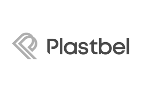
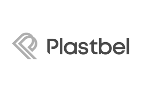

Comunicação com Influência
PNL aplicada à escuta ativa, rapport, linguagem e storytelling para mensagens que geram adesão.
Palestras corporativas com Edi Born que destravam comunicação, alinham decisões e transformam comportamento em performance. Conteúdo direto, aplicável e sob medida para a sua empresa.
Não é motivação momentânea. É mudança de linguagem, atitude e tomada de decisão — percebida no dia seguinte, na reunião seguinte e nos indicadores.
Trainer em PNL e comunicação de alta performance há mais de 15 anos. Fundador da eXpertar (2012) e responsável por formar mais de 1.000 alunos em programas presenciais e imersões. Atua com PNL da vida cotidiana: linguagem clara, exercícios práticos e transformação aplicada ao contexto corporativo.
Experiência como professor em MBAs (ISAE/FGV) e projetos em empresas de diferentes segmentos. Abordagem autoral que combina storytelling, dinâmicas e neurociência para criar palestras envolventes e memoráveis.

Cada palestra é customizada ao seu briefing. Abaixo, trilhas mais procuradas.
PNL aplicada à escuta ativa, rapport, linguagem e storytelling para mensagens que geram adesão.
Mentalidade de crescimento, tomada de decisão, delegação, rituais de alta performance e gestão do estado.
Como reduzir resistência e acelerar adoção de novos processos com linguagem e experiências corretas.
Conexão a valores atemporais, metas claras e rituais de execução que mantêm a energia no longo prazo.
Ferramentas de CNV aliadas à PNL para conversas difíceis, feedbacks e acordos que sustentam relações.
Mapeie crenças, linguagem de valor e conduza jornadas de decisão com ética, clareza e autoridade.
PNL aplicada ao contexto corporativo. Menos teoria solta, mais clareza, consciência e ação.
Presencial, on-line ou híbrido. De 60–90min a imersões de 4–8h. Conteúdo 100% adaptado ao seu contexto.
Algumas marcas pelas quais já passamos com treinamentos, palestras e consultorias.


 



Depoimentos curtos e diretos funcionam melhor. Inclua nome e cargo.
Em uma conversa rápida de briefing, identificamos os principais gargalos de comunicação, alinhamos objetivos e desenhamos a palestra ideal para o seu momento.